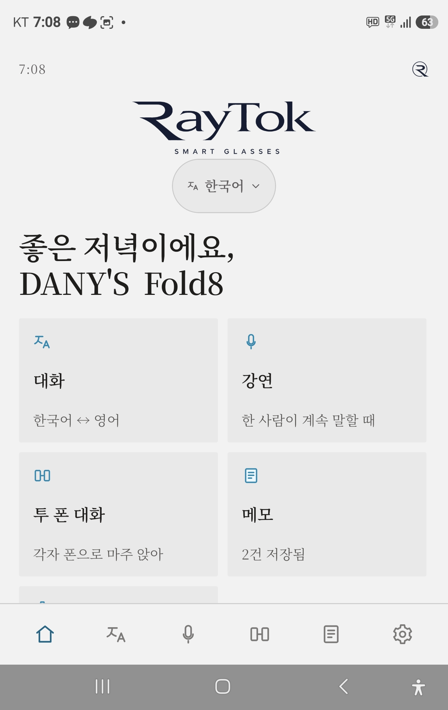
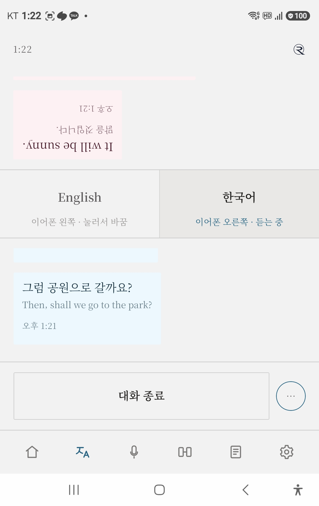
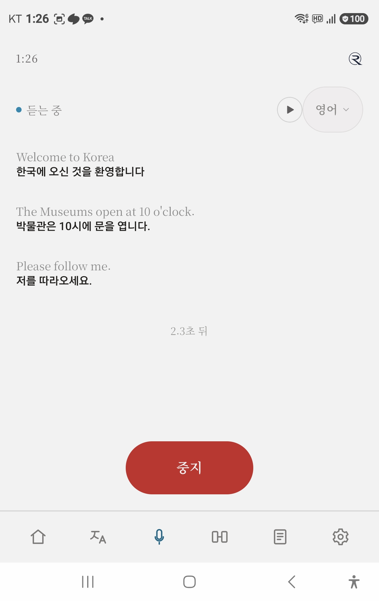
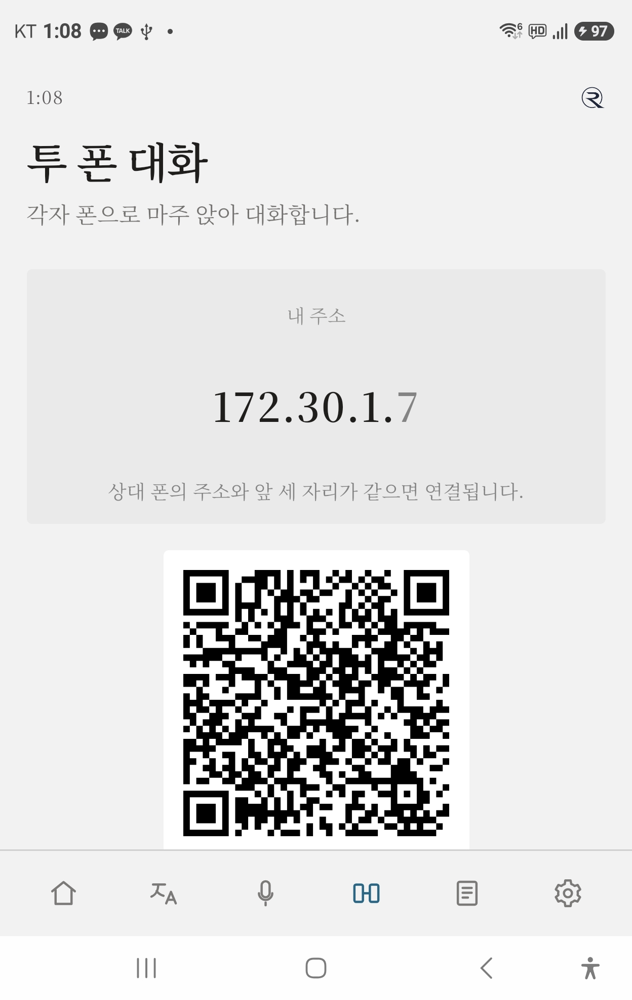
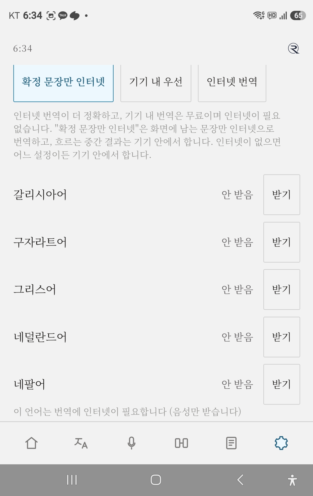

RayTok User Guide
Mobile App, Web Lecture & Listener, and RayTok Desk · October 9, 2026
RayTok is a real-time multilingual translation and subtitle relay service designed for Bluetooth earbuds/glasses, web browsers, and PC video meetings.
Communicate face-to-face using a single smartphone, broadcast lecture subtitles directly to audience smartphones via the web, or enable live multilingual transcription in online PC meetings.
1. Mobile App Setup
Installation
- Search for "RayTok" on Google Play Store, or visit raytok.kr/download
- Android 7.0 or higher supported
Connecting Earbuds or Glasses
- Phone Settings → Bluetooth → Connect your earbuds or audio glasses
- On Samsung devices, turn off Dolby Atmos — when active, left and right channels are mixed. Turn off Dolby Atmos and Mono Audio in Accessibility.
2. Home Screen

Home — Five cards and language selection
- Menu: Conversation / Lecture / Two-Phone Mode / Notes / Settings.
3. Conversation — Two People with One Phone

Conversation — Top: partner's view, Bottom: your view
- Share a pair of earbuds (one earbud each) and place the phone between you.
- Press Start Conversation. When the other person speaks, the translation plays in your ear (right ear); when you speak, it plays in their ear (left ear).
4. Lecture — Continuous Speaker Translation

Lecture — Sentences translated in real time
- Choose the speaker's language and start. Sentences are translated continuously.
- Listen live using the ▶ audio toggle, or save the transcript upon completion.
5. Two-Phone Mode — Independent Devices

Two phones — Connected via QR code
- One device creates a connection QR code, and the other scans it.
- Communicates directly via Wi-Fi or mobile hotspot without requiring an internet connection.
6. Notes — Voice Memo
- Record voice memos to transcribe speech into text, and replay saved conversations anytime.
7. Offline Language Packs

Settings → Languages → Download Language Packs
- Download language packs beforehand to run recognition and translation completely on-device without data usage.
8. ★ Web Presenter Screen (web/host) 3 Steps
Broadcast lesson scripts and live captions directly to audience smartphones from your PC browser.
- Step 1: Prepare Scripts (TXT · PDF · DOCX · HWPX)
Upload lecture files (.txt, .pdf, .docx, .hwpx). Text is automatically split into paragraphs entirely within your browser (zero external leaks). Review and pre-translate into audience languages (English, Japanese, Chinese, Vietnamese, etc.) saved securely in IndexedDB.
- Step 2: Start Lecture and Invite Audience
Click Start Lecture to generate a 6-digit room code and access QR code locally. Direct participants to scan the QR code or open the link, and monitor real-time attendance and language distribution.
- Step 3: Live Progression and Final Report
Advance through paragraphs using keyboard shortcuts (→, Space, ←) or screen buttons. Use Skip and Break controls as needed. After the lecture, click End → review session summary → download 3×3 Reports (TXT/PDF/DOC) and attendee roster CSV (RFC 4180 compliant), then safely close the room.
9. ★ Audience Listener Screen (web/listener) 3 Steps
Receive live captions and translated audio directly on your smartphone browser without app installation.
- Step 1: Join Session
Scan the presenter's QR code using your smartphone camera or enter the 6-digit session code at raytok.kr/web/listener/. Choose your listening language and enter.
- Step 2: Live Captions and Audio
Receive script paragraphs or live spoken captions instantly (original text + translation pair). Toggle audio (🔊) to hear speech synthesis (TTS). For projectors or large TV monitors, switch to Large Screen view (?view=screen).
- Step 3: Save Transcript
During or after the session, click Save Transcript to save files locally on your phone. Choose from 3 content types (Both, Original only, Translation only) × 3 formats (TXT, PDF, DOC). No personal transcripts are sent to servers.
10. ★ RayTok Desk Meeting 3 Steps
Real-time bidirectional captioning and tamper-proof meeting record generation on PC (Windows / Mac).
- Step 1: Launch and License Verification
Open RayTok Desk on your PC, authenticate with a valid license code, and create a meeting room.
- Step 2: Audio Configuration and Connection
Configure microphone input (your voice) and speaker loopback (remote participants' audio), and connect smartphone listeners via the on-screen QR code.
- Step 3: Live Relaying and Tamper-Proof Storage
Monitor live bilingual captions, and automatically generate a SHA-256 hash-chained tamper-proof record when the meeting concludes. Review stored sessions in the web/desk viewer and verify hash integrity in web/verify.
11. ★ Audio Capture by Meeting App (Zoom · Teams · Meet)
In accordance with patent filing guidelines, we provide feature designations and optimal effects rather than internal technical implementations.
| Meeting App | Configuration Target | Features and Expected Effects |
|---|
| Zoom | Map Zoom audio speaker output to RayTok virtual capture device | Cleanly isolates remote participants' speech without background interference, maximizing caption accuracy per speaker. |
| Microsoft Teams | Route Teams device settings speaker to loopback audio capture | Captures multi-party conference speech without audio feedback or howling, delivering seamless low-latency subtitles. |
| Google Meet | Select browser tab audio sharing or system loopback device | Enables crystal-clear real-time interpretation subtitles in web-based meetings without audio quality degradation. |
12. License and Fair Use
- Trial: A 7-day free trial begins immediately upon installing the mobile app.
- License Codes: Enterprise and education licenses can be registered at raytok.kr/lic or in app settings.
- Fair Use Policy: A monthly translation character limit (3,000,000 chars) and concurrent device quota (default 3, Desk 10) apply. See our Terms of Service for details.
13. Troubleshooting
| Symptom | Resolution |
|---|
| No sound in earbuds | Toggle Bluetooth off and on, or reconnect. Ensure Dolby Atmos and Mono Audio are disabled. |
| Script file won't open on web | Legacy .doc files are not supported; convert to modern .docx or Korean .hwpx format before uploading. |
| Listener connection fails | Verify the 6-digit room code and ensure the presenter session is active. |
| Meeting audio not transcribed | Confirm microphone and speaker loopback devices are properly selected in Desk audio settings. |
14. Privacy and Data Protection
RayTok never permanently retains full transcripts or audio recordings on relay servers. Local saving features for presenters and listeners process data strictly on user devices. Details are available in the RayTok Privacy Policy.